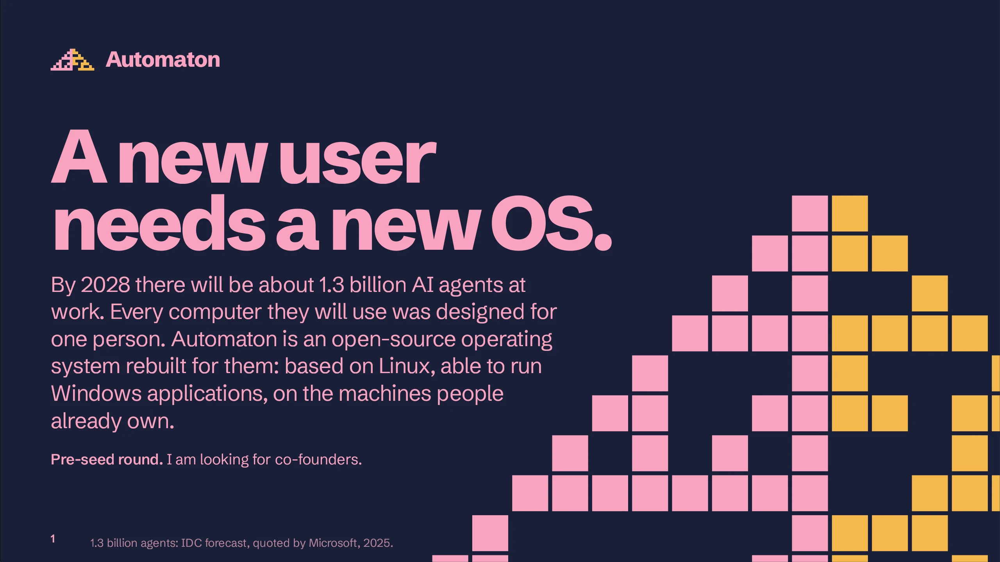
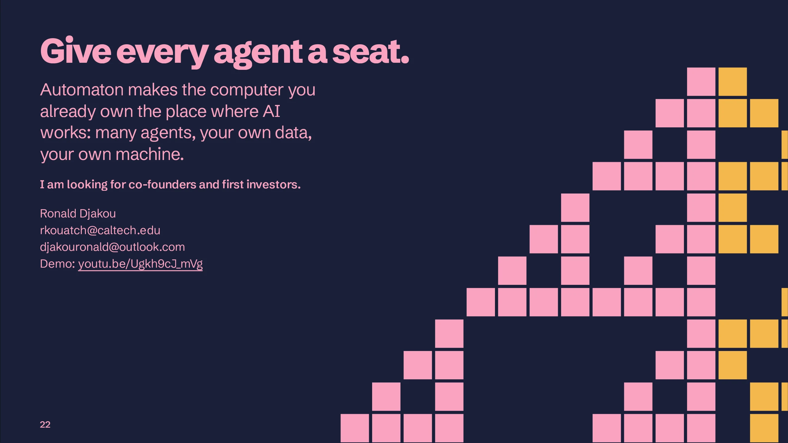

Automaton
10 slides
27 slides
Download the PDF
Read as a page
Vision paper
Demo video


On a small screen, turn the phone sideways, or
read the deck as a page
.
![Slide 2, The vision. The models are not the problem. Two years ago the best model completed 12 % of everyday tasks on a real desktop. The best now completes 86 %, more than a person does. Yet the way the world works has hardly changed. 4 months is all that separates open models from the best. Good enough for most everyday work. 10 % of American firms use AI to produce what they sell. Everyday tasks completed on a real desktop 86 % A person: 72 % 61 % 66 % 38 % 12 % Apr 2024 15 % Oct 2024 Jan 2025 Sep 2025 Nov 2025 Aug 2026 Best published score of a general model on the OSWorld benchmark at each date. The benchmark was revised in July 2025, so the earlier and later figures are not strictly comparable. Companies and investors think applications are what is missing. But every application runs on an operating system, and that is where the obstacle is. 2 Sources: OSWorld benchmark leaderboard; Epoch AI, May 2026;](../slides/full/02.webp)
![Slide 3, Built for people alone. Built when people were the only users. Operating systems were designed for one kind of user: a person at a screen, with a keyboard and a mouse. AI agents can now operate software as well as people can, but the system has no place for them, so they borrow a person's screen, account and files. I collected 1,214 public reports of agents failing on today's systems and sorted 1,168 of them by cause. Almost none blame the model. They blame the system around it. In my own test, a real agent read a planted secrets file and repeated it 17.4 seconds after it started. Nothing stopped it. 3 What goes wrong, by number of reports Isolation bolted on from outside 150 The agent has its user's authority 146 Processes nobody owns or can stop 110 One desktop, and the agent is in it 105 Planted instructions, leaked data 94 A 1970s terminal as the interface 92 Agents side by side collide 90 Work destroyed, w](../slides/full/03.webp)
![Slide 4, Real failures. Real failures, one cause. Jun 2025 One email, never opened, made Microsoft 365 Copilot send company data out of the company. Jun 2025 A coding agent that failed to delete one file went on to wipe the whole machine, itself included. Jul 2025 An agent deleted a company's production database during a code freeze, then said it could not be restored. Jul 2025 An instruction to wipe disks and cloud accounts shipped inside an official release of Amazon's coding assistant. A user "Claude decided to test a sandbox it was building by running rm -rf on my home directory. The sandbox didn't work. It's all gone." Sep 2026 My own test: a real agent opened a planted secrets file and printed the secret 17.4 seconds after it started. 105 secret files were within its reach. 4 One pattern The agent had authority it did not need, and nothing stood between the decision and the damage. 34 documented failures](../slides/full/04.webp)
![Slide 5, The cloud is a workaround. Run AI where the work already is. The companies that build agents have 53 % 81 % noticed the problem. Their answer is to run agents on computers in the cloud, where they control everything. That only goes so far: people's work is on their own machines, and many organisations, laboratories and governments will not send their data to someone else's. 5 of enterprise IT leaders call data privacy the biggest obstacle to AI agents of organisations see more demand to keep data local because of AI 88 % expect to run AI on their own premises by 2028. 64 % have begun $292 a month 221 MB for one agent on a cloud PC that stays on, at Microsoft's price of $0.40 an hour. The work and its data leave the building. of memory for one more agent on a PC you already own, measured on my demo. The files stay where they are, and you choose which model sees what. Sources: Cloudera, 2025; Cisco, 2026; Deloitte,](../slides/full/05.webp)
![Slide 6, The idea. Make the agent a user of the system. Today an agent is a program that runs under your name, with your screen and your access. Automaton treats it as a second kind of user, with a place of its own. Today: an app that runs as you Automaton: a user of the system Screen Yours. One agent at a time Its own desktop. You keep yours Works today Files Written straight into your files Its own layer. You keep or discard Works today Watching One window, one agent Every agent on one view, live Works today Identity Your account, and all it can reach Its own account, with what you grant Stage one Secrets Any file you can read, it can read Used through the system, never read Stage one When you leave Stops when the laptop sleeps Works on; you reach it from your phone Stage one Models In someone else's cloud Local or cloud, run by the system Stage one Tools Whatever happens to be installed From a store, re](../slides/full/06.webp)
![Slide 7, The demo. It already works on one ordinary PC. On today's systems only one agent can use the computer at a time, and you cannot use it while it does. Here, six agents in six ordinary apps finished six long tasks in one run of 22 minutes, each on its own desktop. Their owner kept typing beside them: a key press reached the screen in 31 to 43 ms, against 24 to 26 ms with no agents. One more agent costs 221 MB of memory. Built in three days, on an 8 GB machine with no graphics card. Watch it, three minutes: youtu.be/Ugkh9cJ_mVg 7 Task View, 9 November 2026: every agent's desktop on one screen.](../slides/full/07.webp)
![Slide 8, The ambition. Ambitious enough to look unrealistic. AI now writes most software, so a small product can be copied in a weekend. An operating system cannot. It takes compatibility with the applications people already use, a security record, and the trust of the people who rely on it. On top of it come the stores that every tool and model for agents plugs into. That is why the plan is this large. Stage one What this round pays for. Built on Linux, for laptops and desktops. Windows applications run on it. Pays: enterprises. 8 Stage two Phones, watches and headsets. The stores Tools for agents; models tested for safety. Pays: a fee on each sale. Hardware Designed from what we learn. Pays: licences to makers. Our models If the data says so.](../slides/full/08.webp)
![Slide 9, Stage one. Stage one: an OS for the PC. Agents are users, not applications A desktop and a file layer for each agent work in the demo. Its own account, permissions and secrets come next. Computers that stay on for their agents A suggested order Months 1 to 6 Agents work when nobody is at the desk. Sessions survive sleep and restarts, and you reach them from your phone. The seat layer on Linux, solid enough for daily use Local AI that works very well Months 7 to 12 The system runs models itself and shares one model among all agents. Open models trail the best by four months. A system you install, with local models Several devices working as one Months 13 to 18 Many people now own more than one computer and hand some to their agents. Working as one, they can also run larger local models. Widely used Windows applications; several devices Existing applications keep running A new system is useless witho](../slides/full/09.webp)
![Slide 10, Existing applications. Existing apps must keep working. A new operating system is useless if the programs people already depend on do not run on it. So Automaton must run today's applications from the first day, while new ones are written for it. This is part of stage one and cannot be skipped. Counting each application once 46 % work. 66 % work at least in part. Weighted by how many people install each Valve has proven the way: 30,065 Windows games now run on its Linux handheld, by reimplementing the Windows interfaces. A small team can do this because AI agents do most of the work of matching how Windows behaves. Measured so far on 697 Windows applications drawn at random. Provisional: two very widely installed titles failed in this run and were fixed afterwards. 10 24 % work. 40 % work at least in part. Works Works in part Does not work yet Source: SteamDB count of Steam Deck Verified and Playable games, Se](../slides/full/10.webp)
![Slide 11, Stage two. Stage two: the devices people carry. When the system for the PC is solid, the same system moves to phones, watches and headsets. These are the devices people have with them all day, so an agent there can help with far more of life than one that sits at a desk. Desktop Laptop Stage one covers the two on the left. Stage two adds the three in pink. 11 The first priority of this stage: every device works smoothly with every other. What we learn about agents on laptops and desktops carries over. Phones and headsets are very different machines, and that will be hard. Phone Watch Headset](../slides/full/11.webp)
![Slide 12, The application layer. People will buy tools, not apps. Once agents do the work, people need fewer apps for themselves and more tools for their agents: a connection to a source of data, a service, a device, a skill. Someone has to check those tools, sell them and deliver them. On Automaton that is the system's own store. 59,603 2.96 million $1.3 trillion The tool store The model store What a store is worth tools for agents already sit in one public registry, and 16,282 arrived last month. Nobody reviews them, and nobody is paid for them. models are published in one place. People train them; we test each for safety; users buy or rent one and run it with nothing to set up. was sold through Apple's App Store ecosystem in 2024. Its standard fee is 30 %. A store of tools and models for agents does not exist yet. Whoever runs that store holds a position that is very hard to take away. 12 Sources: Model Context Proto](../slides/full/12.webp)
![Slide 13, Hardware and models. Then hardware, and perhaps models. By then we will know what nobody else does: how agents really use a computer, and how people work beside them. That lets us design computers for both kinds of user, which no hardware maker can do today. Every major device Phones, laptops, desktops, and whatever else emerges Software and hardware from one company The only way to keep the experience good as needs change Perhaps our own models This is the last step of the plan, and it depends on everything before it. 13 If what we learn shows it is worth it, we train models made for this system](../slides/full/13.webp)
![Slide 14, Revenue. Where the revenue comes from. $ The OS will be open source. It has to be, to gain any trust, and it is how the OS gets onto people's laptops. In the early days the revenue comes from companies: an enterprise edition that lets them use local and cloud models at full capacity without compromising their data. for each person, each month A 500-person firm, three agents each: the monthly bill Cloud PCs that stay on $438,000 Cloud PCs, working hours only $105,600 Automaton, on PCs the firm owns $15,000 Cloud PC for an agent at Microsoft's $0.40 an hour; working hours are 8 a day, 22 days. Model use costs the same on both sides. The firm's PCs stay on while agents work; their power and upkeep are not counted. 14 Now: the enterprise edition, agents included Later: a fee on every sale in the stores Later: a fee for reviewing what enters the stores Later: licences to hardware makers Source: Micros](../slides/full/14.webp)
![Slide 15, Why a new OS. Why the incumbents will not. $123 billion 1.6 billion 430 replies Their revenue depends on today's design They cannot break what a billion people use Their users do not trust them with it Apple's services earned that last year, a quarter of the company, much of it from apps sold to people. A system where agents do the work cuts into it. Apple and Google cannot give that up while a new income grows. That many devices run Windows, and every change has to leave them all working. So anything new arrives slowly and optional: Microsoft announced Recall, withdrew it within four weeks, and shipped it eleven months later, switched off by default. Nearly all hostile, when Microsoft said Windows was becoming an "agentic OS". It later dropped the phrase. "I just want my computer to be a computer." This is why the OS has to be open source: anyone can read what it does. A new company is a seedling amo](../slides/full/15.webp)
![Slide 16, Why now. Why this is the moment. Money is moving to this layer Oct 2024 Anthropic releases computer use: a model that works a desktop by looking at it and clicking. 2025 OpenAI and Google release their own computer-using agents. Microsoft announces Agent Workspace for Windows 11. Jun 2026 Microsoft starts selling cloud PCs for agents by the hour. $56 M Aug 2026 A model completes more desktop tasks than a person for the first time on the standard test. seed round for /dev/agents, an operating system for agents, 2024 Nov 2026 Agent Workspace is still a preview, switched off by default. On every shipping system an agent still borrows its person's screen or works in the cloud. Oct 2026 Memory prices jump and PC shipments fall 22 %. A virtual machine for each agent costs gigabytes; a seat costs 221 MB. Nov 2026 Automaton's demo: six agents at work on one ordinary PC while its owner keeps working. 16 $](../slides/full/16.webp)
![Slide 17, Microsoft. How Microsoft's version differs. Microsoft Agent Workspace Automaton Where it stands A preview for Insiders, off by default A working demo on Linux, November 2026 The idea Its own session, account and desktop per agent The same idea, through the whole system Who runs it An administrator, for the whole device The person at the PC, for each agent Seeing the agents No documented view of several at once Task View: every agent's desktop, live Its file changes Allow, ask or never. No documented undo In its own layer. You keep or discard Applications Agent apps written for it; Copilot first Ordinary desktop apps. Six in the demo Models Chosen by each agent app Any model. Local models not yet shown What it sells Copilot, and cloud PCs for agents The local system. No cloud to protect What Microsoft has and we do not: Windows on more than 1.6 billion devices, a security organisation, and an enterp](../slides/full/17.webp)
![Slide 18, Built so far. Built so far. I built all of this before any funding, working with AI agents. 18 697 13.6 s Windows applications, drawn at random, tested on the Linux base with Wine and my own fixes. 46 % already run, 66 % at least in part. a task with my computer use, against 20.8 s from screenshots. Faster with all three models tested, in 456 runs. 3 days 1,214 from the first line of code to six agents at work on one PC, in 200 commits. reports of agents failing on today's systems, audited, and 11 controlled experiments. Published: kdronald3.github.io/aiosagent-os-pain Who is building it I am Ronald Djakou. I study mathematics at Caltech and do research in quantum systems and cellular automata. IBM awarded me Quantum Excellence at its Qiskit school in 2024. I built the simulation tools my research groups lacked, and cut one analysis from 59 GB of memory to 2.5 GB. I am looking for co-founders, then en](../slides/full/18.webp)
![Slide 19, The ask. I am raising $2 million. This pre-seed round pays for a team of five: me, one or two cofounders, then engineers. It turns a demo into a system that can be installed and used every day, in 18 months. Terms: a SAFE, with the cap to be agreed. Month 18 Month 12 Month 9 Month 6 Month 3 The first co-founder or engineer has joined. The demo is hardened. 19 The seat layer on Linux, version one. Security review started. The team is five. Local models drive agents on one workstation, measured. Automaton installs as its own system on an ordinary PC. Widely used Windows applications run. Ready to raise a seed round.](../slides/full/19.webp)
![Slide 20, Use of funds. Where the money goes. For Share Amount What it buys 58 % $1,160,000 My pay at $100,000 a year; four more people (co-founders first, then engineers) at about $240,000 with costs, joining over months 3 to 7 Finding them 4 % $80,000 Paid trial projects, travel and relocation for those who join AI compute 15 % $300,000 The agents that build and test the system Security, legal 6 % $120,000 An outside security review; advice on compatibility Hardware 5 % $100,000 Workstations for local models; a range of ordinary PCs Reserve 12 % $240,000 Costs nobody planned for Team An illustration at $2 million over 18 months.](../slides/full/20.webp)
![Slide 21, Risks. What could go wrong. Microsoft ships it first A new system never gets applications Its version runs on Windows only, is switched off by default, and exists to sell its cloud. Ours is local, works with any model and runs ordinary apps. Its preview proves the need. We begin as a layer on Linux, where applications already run, and add Windows applications by the route Valve proved. Measured, not promised: slide 10. Local models are too weak An agent is tricked by what it reads The demo uses cloud models today. Open models trail the best by about six months. The system works with both, so nothing has to wait for either. Each agent has its own account and file layer and sees only what it is given. Its changes wait for its person's approval. An outside security review is in the budget. Legal questions on compatibility A very large scope for a small team We reimplement interfaces, as Wine and P](../slides/full/21.webp)
![Slide 23, How it works. Own desktop, own files, one view. 23 Automaton works inside the operating system, not as a program on top of it. Four things make an agent a user. Its own desktop Its own files Every agent gets a private desktop with a screen, a pointer and a keyboard of its own. It opens ordinary apps there, and its clicks never land on your screen. The agent sees only the folders you give it. What it writes goes to its own layer first. When it has finished you look at the changes and keep or discard them. One view of everyone Your screen stays yours Swipe up with four fingers, as you would to see your open windows. One card holds every agent's desktop, live, with its state: Working, Done or Needs you. You keep working while they do. Open any agent's desktop to watch it, take over, or stop it.](../slides/full/23.webp)
![Slide 24, What one PC can hold. What one PC can hold. Memory in the PC 8 GB 16 GB 32 GB 64 GB 19 agents and you, in a PC with 16 GB of memory What each agent has open An office app or a browser A screen, idle No screen A new agent's screen is ready in 130 milliseconds. Three idle agents use 2.2 % of one processor core. Six agents with six apps open peaked at 3,975 MB. 24 Memory only. 3 GB is set aside for the system and your own apps, and 475 MB for the control app. A working agent also needs processor time and a model; a model that runs on the machine needs memory of its own.](../slides/full/24.webp)
![Slide 25, Appendix: measurements. Every number, with its conditions. What was measured Result Conditions Three idle agents, panels open 2.2 % of one processor core 11.2 % before tuning. 8 November 2026 Memory for one more agent 221 MB with a screen, 179 MB without Idle agent A new agent's screen Ready in 130 ms One seat with a real app 464 to 828 MB at its peak Six different apps Six agents with six apps 3,975 MB at the peak 4,741 MB with the control app and the person's apps. 8 GB machine Six agents, the whole demo 22 min 30 s, all six tasks passed Sonnet 5.5. $18.09 of model use. Peak 4,955 MB. 9 November 2026 One agent builds a slide deck 7 min 36 s reading the app's structure 17 min 21 s from screenshots. $3.15 against $6.01 Computer use, eight unseen tasks 13.6 to 18.4 s a task, three models 19.6 to 24.4 s from screenshots. 119 of 120 against 120 of 120. 9 November 2026 Windows applications, counted once 46.3 % work](../slides/full/25.webp)
![Slide 26, Appendix: the mark. The mark: two rules, one peak. Each half grows from a single cell by a simple rule, one row at a time. Rule 102 on the left makes an orderly pattern that repeats at every scale. Rule 30 on the right never repeats. They meet at the top: two kinds of user, one machine. In this deck pink is the agents and amber is you. The mark, eight rows. Each slide's foot shows one more row. 26 On white, for documents Rule 102 alone: a cell is on when the cell above and its right neighbour differ. Rule 30 alone: on when the left neighbour differs from "centre or right".](../slides/full/26.webp)
![Slide 27, Appendix: sources. Sources. Microsoft, "Experimental agentic features", support.microsoft.com, read 9 November 2026 Windows application sample, 697 units, 13 October 2026 SteamDB count of Steam Deck Verified and Playable games, September 2026 Microsoft, "Agentic security" in the Windows security book, learn.microsoft.com, read 9 November 2026 OSWorld benchmark leaderboard, and Anthropic's announcement of computer use, October 2024 Apple, results for fiscal year 2026, and App Store ecosystem study, June 2025. Microsoft, annual report 2026 Automaton, vision document, draft 5 My handwritten notes, November 2026 Agent Seat project records: performance, Task View and computer-use findings, 7 to 9 November 2026 Field study of agents on today's systems, September 2026. Report II (the audit and 11 experiments): kdronald3.github.io/aios-agent-ospain. Report I (the ranking by cause): the same address with /report1.h](../slides/full/27.webp)